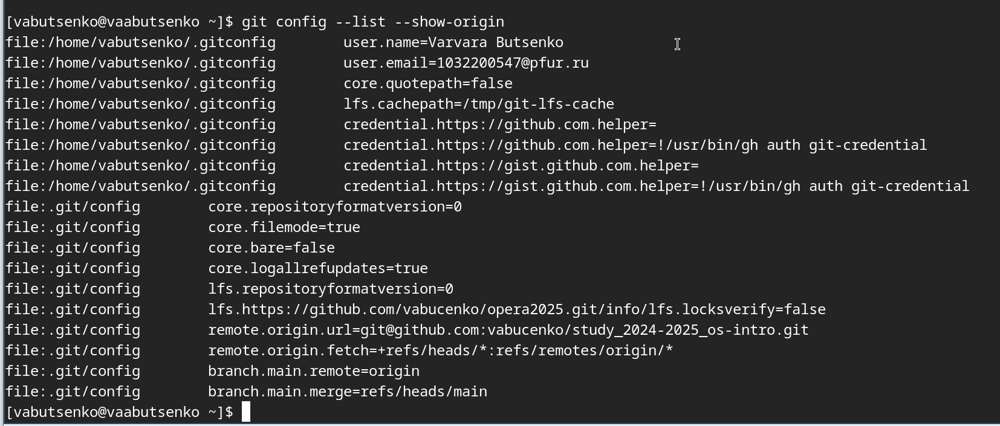
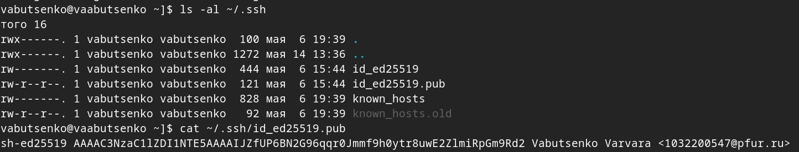
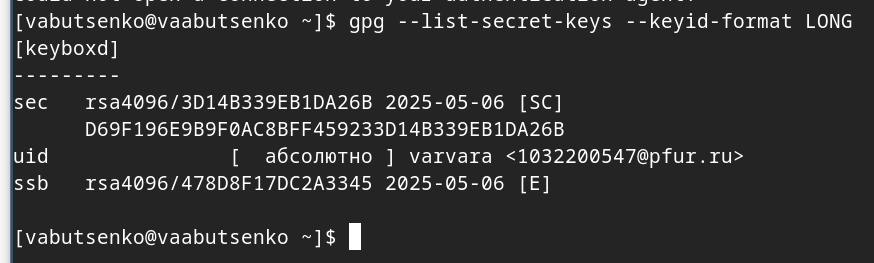
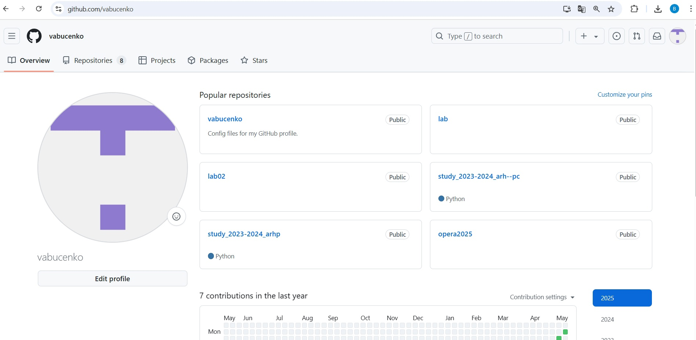
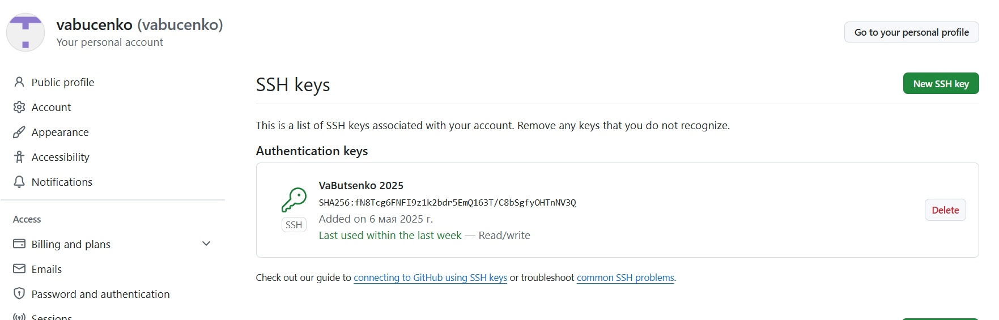
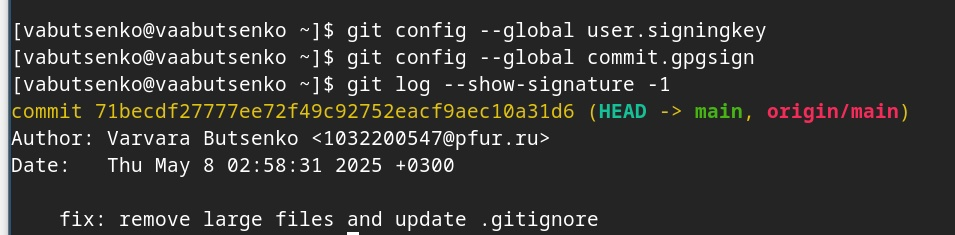
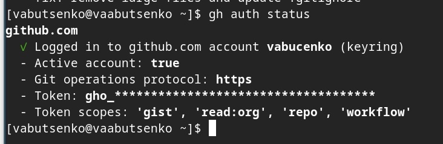
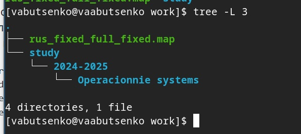
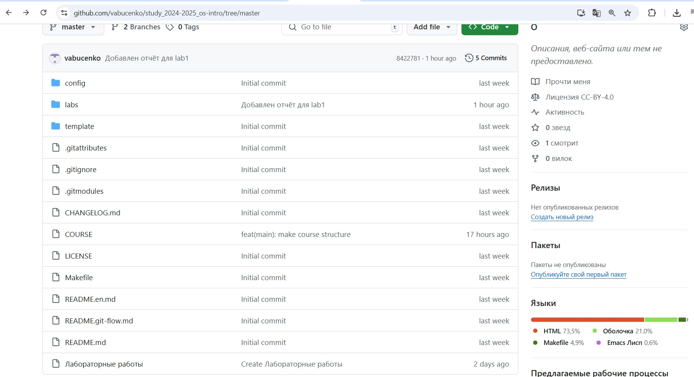
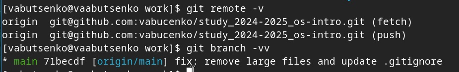

- Буценко Варвара Алексеевна
- студент 4 курса НПМбв-02-21
- Российский университет дружбы народов
- 1032200547@pfur.ru
- https://github.com/vabucenko/study_2024-2025_os-intro

1) Устанавливаю git. Заранее сделала это, поэтому использую командуgit –version, чтобы показать свою версию.
2) Устанавливаю gh. Заранее сделала это, поэтому использую команду gh –version, чтобы показать свою версию.
3) Настраиваю git: задаю имя и email владельца: - git config –global user.name “Name Surname”, - git config –global user.email “work@mail”.
Настраиваю utf-8 в выводе сообщений git:
git config –global core.quotepath false
Настраиваю верификацию и подписание коммитов git.
Задаю имя начальной ветки (буду называть её master):
git config –global init.defaultBranch master
Параметр autocrlf:
git config –global core.autocrlf input






Перехожу в каталог курса:
cd ~/work/study/2024-2025/“Operacionnie systems”/os-intro
Удаляю лишние файлы:
rm package.json
Создаю необходимые каталоги:
echo os-intro > COURSE
make



Системы контроля версий (VCS) — это программные инструменты для отслеживания изменений в файлах (чаще всего в исходном коде) и координации работы нескольких участников. Они позволяют фиксировать историю изменений, возвращаться к предыдущим версиям и совместно работать над проектами.
Для решения каких задач предназначаются: - Хранение истории изменений - Командная разработка - Резервное копирование - Анализ изменений
Ключевое различие — в способе хранения истории изменений и организации работы.
Централизованные это системы, где вся история проекта хранится на едином сервере. Разработчики получают из него последние версии файлов и отправляют изменения обратно.
Децентрализованные - это системы, где каждый участник проекта имеет полную копию репозитория со всей историей изменений. Работа ведётся локально, а синхронизация между копиями происходит через команды push/pull.
Централизованные: - SVN - CVS - Perforce
Децентрализованные: - Git - Mercurial - Bazaar
7) Назовите и дайте краткую характеристику командам git.
Настройка:
git config Настройка параметров Git (имя пользователя, email, редактор и др.).
git config –global user.name “Ваше Имя” Создание и клонирование репозиториев
git init Создает новый локальный репозиторий в текущей папке.
git clone
Работа с изменениями:
git status Показывает состояние файлов (измененные, добавленные, неотслеживаемые).
git add <файл> Добавляет файлы в индекс (staging area) для последующего коммита.
git commit -m “сообщение” Фиксирует изменения в репозитории с комментарием.
git restore <файл> Отменяет изменения в файле (до последнего коммита).
Просмотр истории:
git log Выводит историю коммитов (автор, дата, сообщение).
git diff Показывает разницу между текущими изменениями и последним коммитом.Ветвление и слияние
git branch Показывает список веток (текущая помечена *).
git checkout <ветка> Переключается на указанную ветку.
git merge <ветка> Вливает изменения из указанной ветки в текущую.
Работа с удаленными репозиториями
git remote add <имя>
git push
git pull
Работа с локальными репозиториями
Создание локального репозитория: git init my_project
Клонирование удалённого репозитория в локальный: git clone https://github.com/username/repo.git
Добавление файлов в локальный репозиторий: git add filename.txt
Коммит изменений в локальном репозитории: git commit -m “Добавлен новый файл”
Просмотр статуса локального репозитория:git status
Работа с удалёнными репозиториями
Добавление удалённого репозитория в локальный (если он уже существует): git remote add origin https://github.com/username/repo.git
Получение (пулл) изменений из удалённого репозитория: git pull origin main
Отправка (пуш) локальных изменений в удалённый репозиторий: git push origin main
Просмотр списка подключённых удалённых репозиториев: git remote -v
Удаление удалённого репозитория: git remote remove origin
Ветвь — это независимая линия разработки, позволяющая изолировать изменения от основного кода (обычно main/master). Каждая ветка содержит свою историю коммитов.
Зачем нужны ветки?
Параллельная разработка
Изоляция экспериментов
Гибкое управление версиями
Контроль качества
Упрощение Code Review
10)Как и зачем можно игнорировать некоторые файлы при commit?
Чтобы игнорировать файлы в Git, используется файл .gitignore, который находится в корневой директории репозитория. Этот файл содержит шаблоны,которые указывают, какие файлы или директории должны быть проигнорированы.
Зачем игнорировать файлы?
Не коммитить временные/системные файлы Логи, кэш, бинарники (например, .log, .tmp, .exe).
Избегать личных настроек Файлы IDE (.idea/, .vscode/), конфиги с паролями.
Снижать «шум» в репозитории Автогенерируемые файлы (node_modules/, pycache/).
Настройка базовой конфигурации Git: Были выполнены основные настройки Git, включая указание имени пользователя, email, настройку кодировки UTF-8, а также параметров для работы с ветками и окончаниями строк. Это обеспечило корректную работу системы контроля версий.
Создание и настройка SSH и PGP ключей: Были сгенерированы ключи SSH (алгоритмы RSA и ed25519) и PGP, что позволило обеспечить безопасное взаимодействие с удалёнными репозиториями и подписывание коммитов.Ключи были успешно добавлены в аккаунт GitHub.
Работа с GitHub: Была выполнена аутентификация в GitHub CLI, создан шаблон рабочего пространства, а также организована структура каталога для выполнения заданий. Локальные изменения были зафиксированы и отправлены на удалённый репозиторий.
Освоение команд Git: В процессе работы были изучены и применены основные команды Git, такие как git init, git clone, git add, git commit, git push, git pull, а также команды для работы с ветками и историей изменений. Это позволило эффективно управлять версиями проекта.